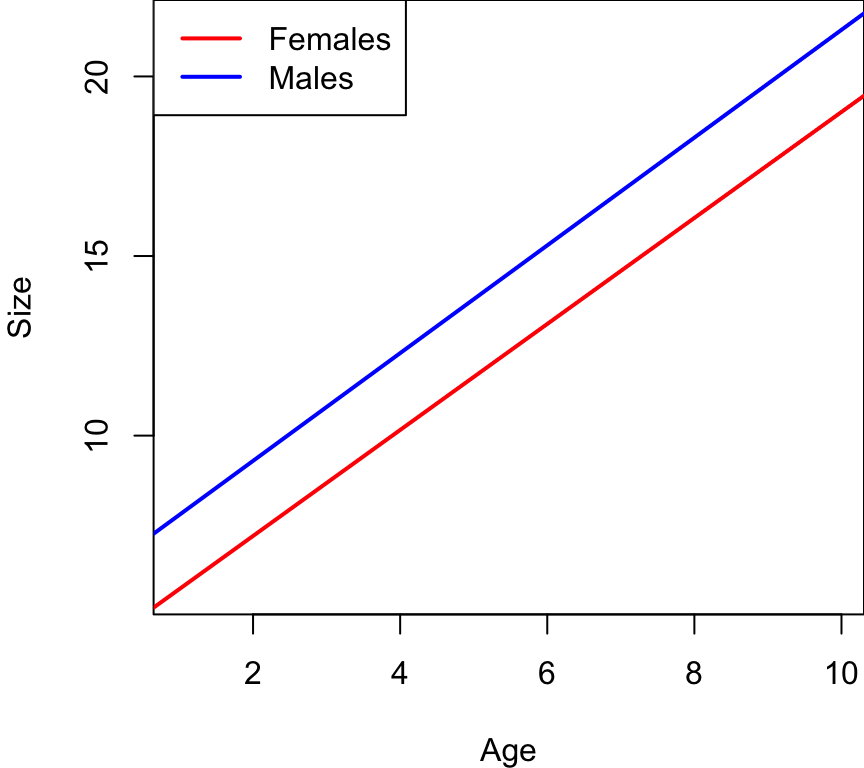
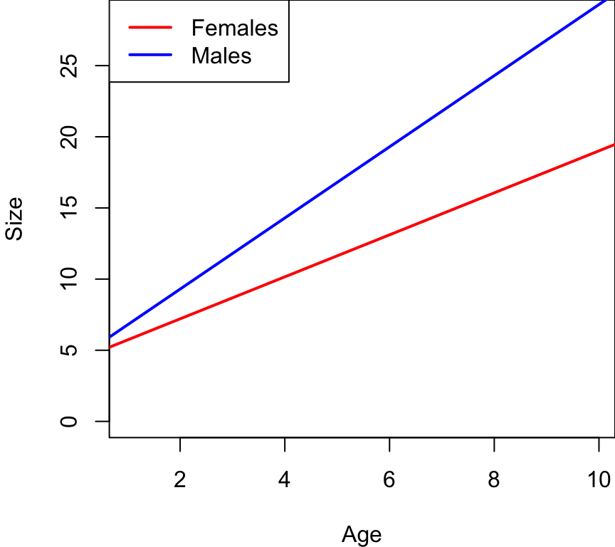
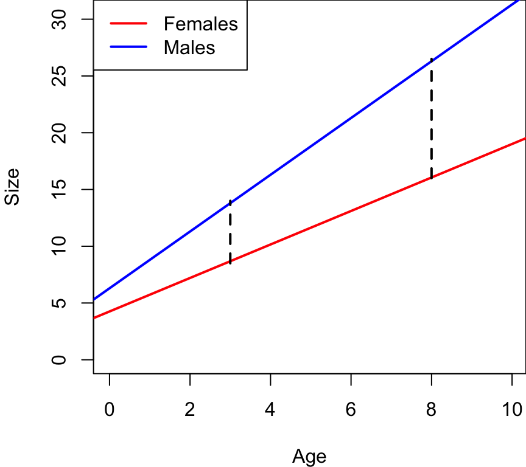

Any questions before we begin?
Today we are going to learn about interactions!
Last week I suggested that collinearity is critically important to understand, because it is a nuisance that we must account for to get unbiased estimates, and so we spent an entire week on the topic. This week, I think interactions are also critically important, so we will again spend a week on this topic. But interactions are actually really interesting and can greatly enhance the interest in our research and what we are learning.
What are interactions…? Let’s start with an example.
Q: What is the effect of The Pill on reproductive output? ….does it cause reproduction to be ~0? It depends….
The Pill reduces reproductive output of females to zero, but it does not influence the reproductive output of males. This is an interactions!
interactions – the effect (beta) of one X-variable depends on the value of another X-variable
Sometimes people will implicitly assume there is an interaction, and separate out their data to analyze the effect of the pill on two groups separately: males and females. This is okay! BUT…
Let’s say that we find that the effect of the pill on males is some very small number close to ~0 (e.g., beta = 0.001), and then we get a large beta for the effect of the pill on females. How would we know that these effects are statistically different? Well, we can’t know that if we analyzed these effects separately.
If you want to know if the effect is different between two groups (sexes, species, etc.), you need to test for an interaction.
Let’s again consider an example we have seen before, that I like, because it is easy…
Previously we ran this multi-variable model: \(Size = \beta_0 + \beta_1 * Size + \beta_2 * Sex\)
This model is implicitly assuming that lines for each group are parallel – they have the same slope:

The effect of sex is the same for all ages, and the effect of age is the same for both sexes. This is an assumption that we have made. But this is not an assumption that we have to make…
What if we assume that these effects are different…?

All individuals start out at about the same size, but then males grow faster and reach a larger size at an earlier age than females.
This is an interaction! The effect of age depends on sex. We get a different beta (slope) for the age-size relationship for males then we do for females.
Another interesting thing I want to point out is that for interactions, perspective does not matter:
For example:

At a young age, the difference between sexes is small; at an older age, the difference is larger.
You can take whatever perspective is most valid for you, and it depends on the questions you are asking. A little open to interpretation.
How do we add an interaction into the linear model?
So now the linear model looks like:
\(Size = \beta_0 + \beta_1Size + \beta_2Sex + \beta_3 Age*Sex\)
################### 'Truth' ####################
### Lecture 14: code to simulate data for class
# Set the seed for reproducibility
set.seed(123)
# This is similar to the Age, Sex, and Size data we simulated for in Lecture 12.
# There is no collinearity between Age and Sex, but now there is an interaction
# between Sex and Age.
# First dataset
# X variable
n <- 50
x1 <- c(rep("Female", n), rep("Male", n))
x2 <- runif(n * 2, 1, 10)
dummy <- data.frame(model.matrix(~ x1 - 1))
colnames(dummy) <- c("Female", "Male")
# Simulate error
Error <- rnorm(n * 2, 0, 0.8)
# Predict Y
Response <- 4 + 1.5 * x2 + 1 * dummy$Male + 1 * x2 * dummy$Male + Error
# Dataframe
datum <- data.frame(Age = x2, Sex = x1, Male = dummy$Male, Size = Response)
# Save the data
write.csv(datum, "lecture_14_dataset1.csv", row.names = FALSE)